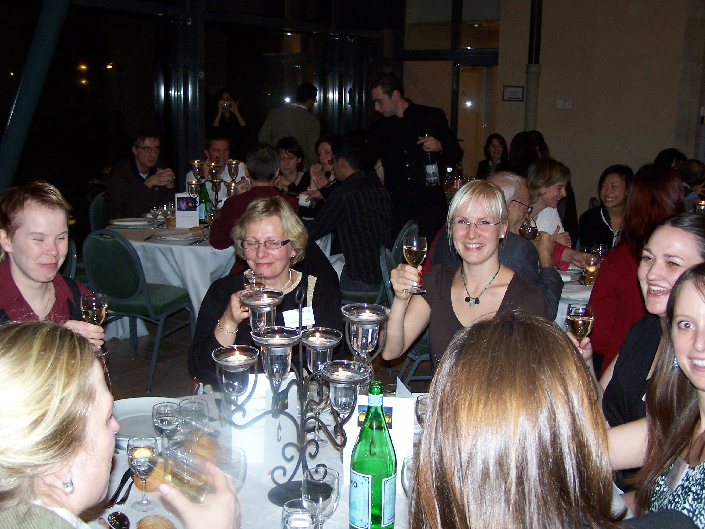
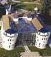

|
p53 MARATHON 2007 |
 |
| IARC, 150 cours Albert-Thomas, 69372 Lyon Cedex 08, France. | IARC TP53 Database : http://www-p53.iarc.fr | |
|
3rd International Workshop on Mutant p53 Deregulating the p53 Network : Origin and Consequences of TP53 mutations 13-15 November 2007, Lyon, France |
Symposium on Li-Fraumeni syndrome Phenotype of TP53 germline mutations in humans 15-16 November 2007, Lyon, France |
|
|
| Photos and Souvenirs |
Workshop and Symposium

|
Dinner at the castle:
 |
About the castle:
 |